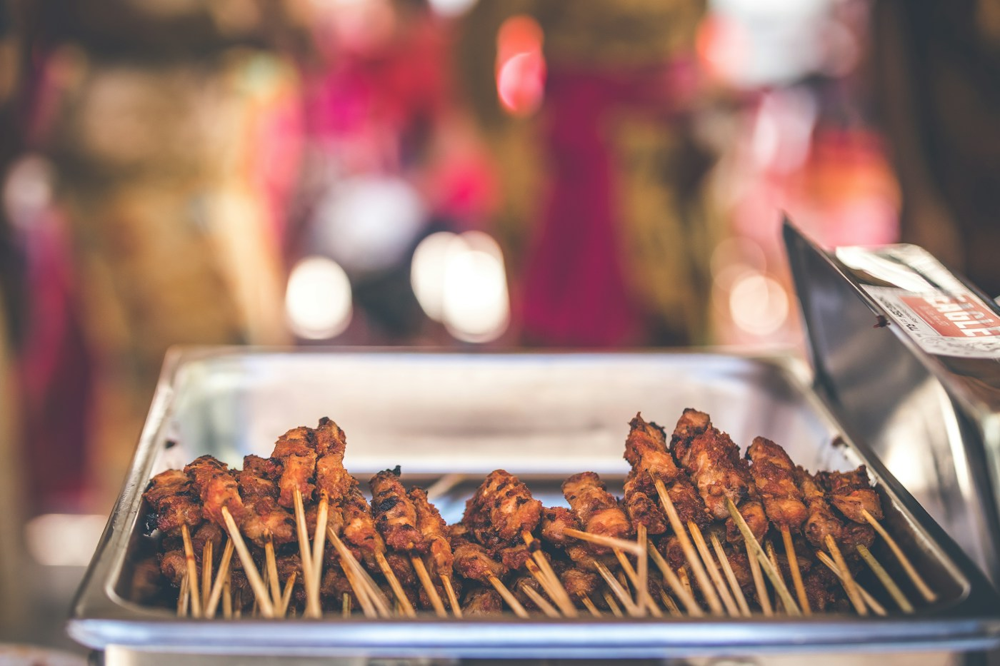
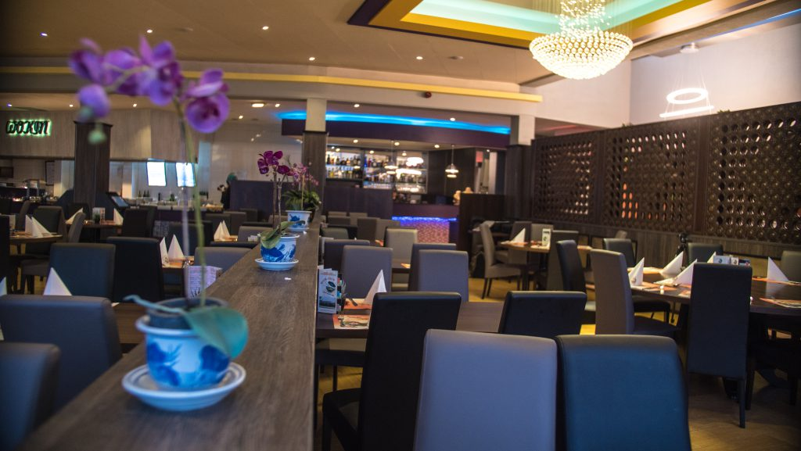
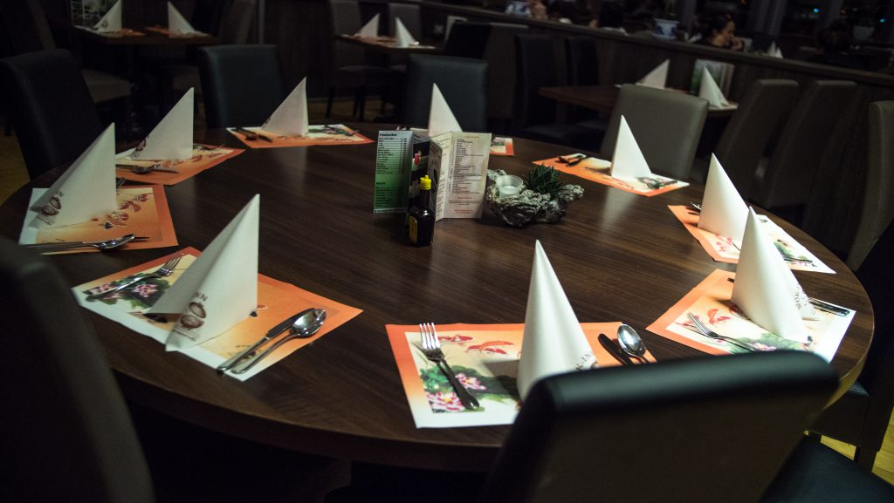

Maandag t/m donderdag
€ 36,00 p.p.

Chinees-Japans restaurant in Veghel
Heerlijke gerechten uit de Chinese, Japanse, Indonesische en Hollandse keuken. 2,5 uur all-in dineren, drankjes inbegrepen.
Wok-Inn is een uniek restaurant met een eigen concept. U betaalt niet voor losse gerechten, maar geniet voor een vaste, lage prijs van de heerlijkste gerechten uit de Chinese, Japanse, Indonesische en Hollandse keuken. Zo weet u altijd hoeveel u uitgeeft en wat u daarvoor krijgt.
Groot, klein, jong en oud: iedereen kan zich bij ons te goed doen. En kinderen van 4 t/m 11 jaar eten voordelig mee.
2,5 uur all-in dineren, inclusief drankjes.
€ 36,00 p.p.
€ 38,00 p.p.
4 t/m 11 jaar: € 2,50 per levensjaar. 0 t/m 3 jaar gratis.
Prijs: € 10,00
Maagverkleining: € 5,00 korting.
Op feestdagen en speciale dagen geldt het weekendtarief, behalve met de kerstdagen. Dat zijn: oudjaarsdag, nieuwjaarsdag, 1e en 2e Pasen, Koningsdag, Hemelvaartsdag, 1e en 2e Pinksteren en kerstavond 24 december. Voor 1e en 2e kerstdag gelden andere tarieven, die ruim voor de kerst bekend worden gemaakt.

U stelt zelf uw gerecht samen en overhandigt dit aan de kok. U kiest er wel een saus bij: deze staan op het bord achter de woktafel. Hoe meer vlammetjes, hoe pikanter de saus.
De door u uitgezochte gerechten worden op een hete plaat zonder saus gebakken. Dit duurt wat langer dan bij de woktafel.
U kiest uit vlees en vis op een bord, achter de teppanyakitafel. Op de grill: keuze uit kipsaté en ossenhaassaté.

Een van de zes mogelijkheden voor uw hoofdgerecht.
Voor ons lopend buffet bereiden onze koks elke dag 30 overheerlijke oosterse gerechten.


Alle sauzen zijn op basis van groentebouillon en verse kruiden, dus ook ideaal voor vegetariërs. Hoe meer vlammetjes, hoe pikanter.
Japanse kruiden met zoete soja, sake en gember. Ideaal voor vlees en vis.
Oestersaus.
Bereid met ananas, gember en limoen. Ideaal voor vlees en vis.
Bekende saus van ananas, ui, knoflook, gember en peper. Ideaal voor alle soorten vlees.
Indonesische kruiden met zoete ketjap, knoflook, paprikapoeder en sesamolie. Ideaal voor kip- en varkensvlees.
Verse knoflook en kruiden.
Gecombineerde oosterse saus van tomaten, fruit, chilipepers, knoflook, sesamolie, oestersaus, gember en barbecuesaus. Ideaal voor alle soorten vlees en vis.
Chinese hoisinsaus met chilisaus, knoflook, uien en oestersaus. Ideaal voor garnalen en rundvlees.
Chinese kruiden met zwarte sojabonen, knoflook en peper. Ideaal voor kip- en rundvlees.
Hete peper, gember en groene Thaise currypasta met romige kokosmelk en limoenblaadjes. Ideaal voor kip- en rundvlees.
Indonesische sambalsaus bereid met knoflook, peper en kruiden.

Heerlijke sushi, elke dag vers bereid.
Stel zelf uw nagerecht samen uit verschillende soorten ijs, fruit, vruchten en salades.
Uw maaltijd, uw keuze. U schept zelf op in een bakje, bij het buffet en bij de wok, en stelt zo uw eigen selectie samen. Voor elk bakje geldt een vaste prijs.
Dinsdag t/m donderdag: 17:30 – 20:30
Vrijdag t/m zondag: 16:30 – 21:00
Meer weten? Bel ons op 0413-369308.
Keuze uit nasi, bami en mihoen: een uitstekende basis voor uw maaltijd.
Een mix van onze gerechten met bijgerechten, in de balans die u lekker vindt.
Een selectie van diverse gerechten: een combinatie van vlees, vis en groenten.
Speciale bakjes met uitsluitend garnalen of ossenhaas.
Ook met kerst kunt u volop genieten bij Wok-Inn. Tijdens de kerstdagen wordt het menu uitgebreid met een aantal luxe gerechten. U kunt reserveren in twee rondes.
16:00 of 16:30
19:00 of 19:15
2,5 uur all-in dineren, inclusief drinken
€ 50,00 p.p.
Kinderen 4 t/m 11 jaar: € 3,50 per levensjaar (bijvoorbeeld 4 jaar is € 14,00). Kinderen 0 t/m 3 jaar gratis.

Ons wokrestaurant biedt plaats aan 300 personen. Wij hebben diverse tafelopstellingen die we naar wens aanpassen: knus voor 2, 4, 6 of 8 personen, voor een hoge mate van privacy. Voor grotere gezelschappen zijn er opstellingen voor 12, 20, 40 en 50 personen. Op verzoek stellen wij iedere gewenste tafelsamenstelling op.
Op onze eigen, zeer ruime parkeerplaats is plek voor meer dan 300 auto's. U loopt zo vanuit uw auto het restaurant in.
U betaalt vooraf voor een verblijf van 2,5 uur met het all-in arrangement. Uw arrangement begint na de betaling. Afzonderlijk per persoon afrekenen is niet mogelijk: u ontvangt één rekening per tafel of reservering. Wilt u toch apart afrekenen, dan kunnen we dit samen bespreken.
Om verspilling te voorkomen vragen wij u alleen te nemen wat u daadwerkelijk op kunt. Bij verspilling behouden wij ons het recht voor om € 3,- per verspild item in rekening te brengen.
Het is niet toegestaan om (restanten van) eten en drinken mee naar huis te nemen. Alleen om speciale redenen kunt u dit eerst met ons bespreken.
Heeft u een favoriete tafel? Laat het ons weten bij uw reservering, dan proberen wij hiermee rekening te houden. Helaas is dat niet altijd mogelijk.
Bent u te laat of verhinderd? Wij houden uw tafel 30 minuten voor u vast. Daarna zijn wij genoodzaakt deze vrij te geven.
Eet u met een groep? Dan adviseren wij om het arrangement gezamenlijk te starten.
Neemt u kinderen mee? Gezellig! Houd hen wel goed in de gaten: ouders blijven altijd verantwoordelijk voor hun eigen kinderen.
(Huis)dieren, inclusief honden, zijn niet toegestaan.
U bent te allen tijde zelf verantwoordelijk voor uw eigendommen. De directie is niet aansprakelijk voor diefstal of verlies van kledingstukken, tassen, telefoons en dergelijke.
Bij ons kunt u onbeperkt komen genieten. Reserveer hier voor maximaal 16 personen.
Met meer dan 16 personen? Bel ons op 0413-369308.

De keuken sluit om 21:30. Volg ons op Facebook.